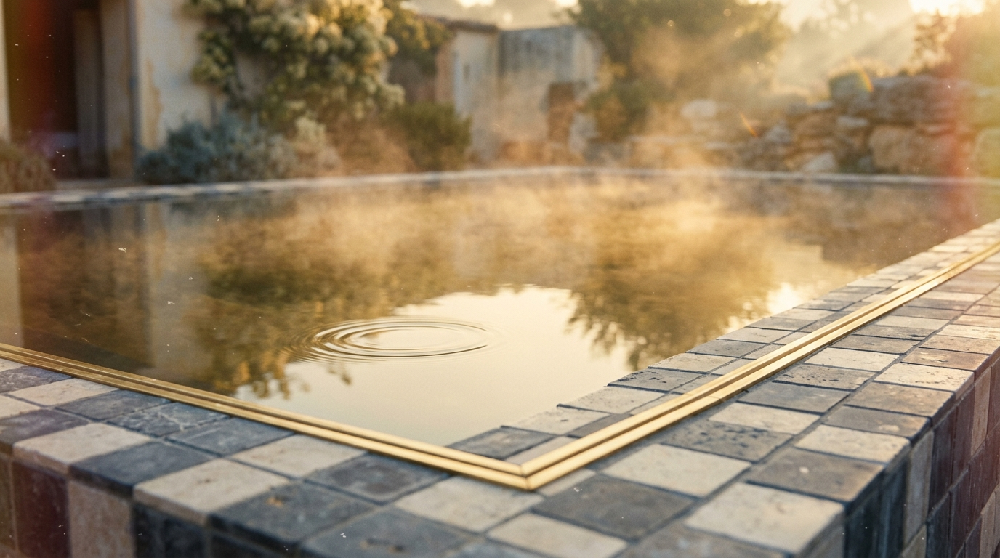

Ingrid — from the mat into the day
She doesn't need convincing about presence; she needs continuity. The ring carries the last minute of savasana into the market, the classroom, the afternoon.


A wide, smooth gold band that changes the light in a room. This library holds every thread of the story — the ring as a symbol of presence, ethereal motion, a cast of storytellers, performance moments, five user stories, and the email hero worlds. Beautiful, editorial, subtle.
Not a product shot — a spell. The band sits in still water, in golden tides, on cold glass, and the environment answers: light spreads, the room warms, physics bends a beat. Presence, made visible. Ported from the testimonial studio's surreal light-leak grammar.
A whole golden-hour landscape, refracted inside the circle of the band. The ring as a symbol, not a product.





Slow, floating, larger-than-life. These loop under testimonials and across the funnel — nature, light, quiet domestic detail, never a person. Transcoded for web; the studio holds the full-resolution masters.
The faces behind the testimonials, and the personas behind the emails — a broad, real cast, each caught in soft ambient light with the ring as a discovered detail.
Presence isn't only calm — it's the still point inside peak performance. The breath before the move, the hand on the rope, the palms flat on the pass. The ring, where high performers return to now.


Whole stories, composed end to end — a storyteller, captioned, bookended with the ring, cut against the ethereal b-roll. The output of the Pulse Stories studio.
She doesn't need convincing about presence; she needs continuity. The ring carries the last minute of savasana into the market, the classroom, the afternoon.
Not a productivity system. A physical anchor: drift, tap, return. The segment Pulse is actively testing — shown honestly, six tabs and all.


"Three things that bring me joy every day — my life is fundamentally better." The ring is the reminder; the notebook is the practice; the day is the material.


Straight from the founder conversation: when there's too much inside to sit still, the ring is aid, not homework. One tap on a crowded train. Shoulders down. Door opened differently.


The pivot from individual mindfulness to shared presence: both rings tap at the same moment, and a private practice becomes a small ritual between two people.


Every frame and character reference from this set, in one grid.
The full lifecycle set — warm Maya letters and dark luxe product frames, plus the new soft-light variants.
Numb to generous across seven stages and three lenses — the original golden-hour grammar.
{kind=link}
{kind=link}
{kind=link}
{kind=link}
{kind=link}
{kind=link}